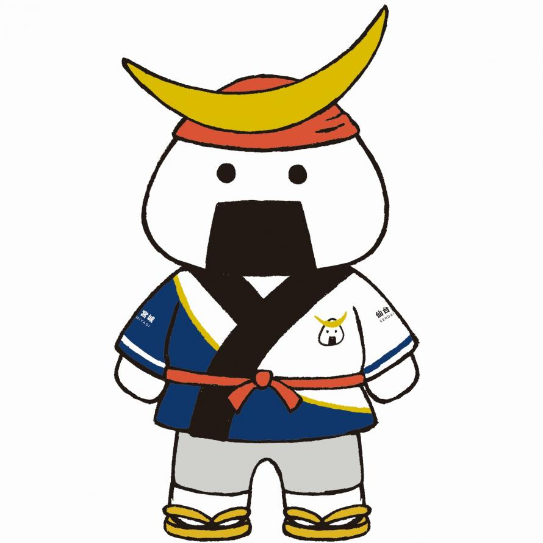

むすび丸を使うには - 宮城県公式ウェブサイト
本文の保存版（2026-11-22）
出典URL：https://www.pref.miyagi.jp/site/sendaimiyagicp/musubimaru_howto.html
本文へスキップします。
宮城県 Miyagi Prefectural Government
- 災害・気象情報
- 閲覧支援
- 検索メニュー
- Foreign Language
- 閲覧支援メニュー
- 音声読み上げ
- 文字サイズ・色合い変更
閉じる
- 災害・気象情報
宮城県災害・気象情報
宮城県防災情報
ポータルサイト閉じる
- 休日救急当番医
閉じる
閉じる
目的から探す
- 助成・融資・支援
- 申請・手続き
- 資格・試験
- 施設
- 許認可・届出
- 計画・施策
- 条例・制度
- イベント・会議・募集
- 統計情報
- デジタルみやぎ
- 相談窓口
- パブリックコメント
- 組織から探す
- 事業者の方へ
MIYAGI＋iRO 宮城十色
自然や歴史・文化から、
食や暮らしに至るまで。 あなたにとってきっとプラスになる、
色とりどりの出会いがここにはあります。
PROGRESS MIYAGI 富県躍進！持続可能な未来のための 8つの「つくる」
閉じる
サイト内検索
検索の仕方
トップページ > 観光・文化 > 観光 > 観光情報 > 仙台・宮城観光キャンペーン推進協議会 > 仙台・宮城観光PRキャラクター「むすび丸」 > むすび丸を使うには
掲載日：2026年9月2日
ここから本文です。
むすび丸を使うには
仙台・宮城観光PRロゴマーク「みやげ話は、みやぎ話。」及び「むすび丸」を、観光客誘致を目的とした各種媒体等にご活用ください。
使用に当たって料金は発生しませんが、事前に使用申請が必要となりますので、手続きをお願いします。
「みやげ話は、みやぎ話。」及び「むすび丸」を使用する場合は、「仙台・宮城観光PRロゴマーク等使用申請書」（以下、「使用申請書」という。）（様式1）に使用方法の分かるもの（デザイン等）を添付して仙台・宮城観光キャンペーン推進協議会に提出してください。
- 使用できる画像
- 使用期間
- 使用承認
- 使用承認しない場合
- 申請内容の変更
- 使用条件
- 使用承認の取り消し
- 申請先
- 様式集
申請が不要の場合
次に該当する場合は申請の必要はありません。
- 仙台・宮城観光キャンペーン推進協議会会員が使用する場合…使用方法の分かるもの（デザイン等）
のみ提出してください。ただし、商品パッケージや商品自体に使用する場合は申請が必要になります。 - 新聞、テレビ、雑誌等の報道関係機関が報道目的に使用する場合
- 個人が宮城県の観光をPRする目的で使用する場合
また、使用承認が必要ない場合でも、下記「4.使用承認しない場合」に該当する場合は使用できません。
1.使用できる画像
| No. | 画像ダウンロード | |
| 1 | ロゴマーク基本 | 画像（PNG：107KB） |
| 2 | ロゴマーク横 | 画像（PNG：78KB） |
| 3 | ロゴマーク縦 | 画像（PNG：95KB） |
4 |
ロゴマーク組み合わせ | 画像（PNG：147KB） |
| 5 | むすび丸甲冑7 | 画像（PNG：502KB） |
| 6 | むすび丸組み合わせ3 | 画像（PNG：677KB） |
| 7 | むすび丸組み合わせ4 | 画像（PNG：401KB） |
| 8 | むすび丸組み合わせ5 | 画像（PNG：334KB） |
| 9 | ロゴマーク（和文） | 画像（PNG：94KB） |
| 10 | ロゴマーク横（和文）） | 画像（PNG：72KB） |
| 11 | ロゴマーク縦（和文） | 画像（PNG：93KB） |
| 12 | ロゴマーク組み合わせ（和文） | 画像（PNG：133KB） |
| 13 | むすび丸顔 | 画像（PNG：86KB） |
| 14 | 画像（PNG：223KB） | |
| 15 | むすび丸甲冑2 | 画像（PNG：207KB） |
| 16 | むすび丸甲冑3 | 画像（PNG：80KB） |
| 17 | むすび丸甲冑4 | 画像（PNG：195KB） |
| 18 | むすび丸甲冑5 | 画像（PNG：235KB） |
| 19 | むすび丸甲冑6 | 画像（PNG：171KB） |
| 20 |  |
画像（PNG：142KB） |
| 21 | むすび丸祭り2 | 画像（PNG：98KB） |
| 22 | むすび丸祭り3 | 画像（PNG：147KB） |
| 23 | むすび丸祭り4 | 画像（PNG：101KB） |
| 24 | むすび丸祭り5 | 画像（PNG：114KB） |
| 25 | むすび丸祭り6 | 画像（PNG：101KB） |
| 26 | むすび丸祭り7 | 画像（PNG：107KB） |
| 27 | むすび丸スポーツ1 | 画像（PNG：136KB） |
| 28 | むすび丸スポーツ2 | 画像（PNG：120KB） |
| 29 | むすび丸スポーツ3 | 画像（PNG：120KB） |
| 30 | むすび丸スポーツ4 | 画像（PNG：116KB） |
| 31 | むすび丸スポーツ5 | 画像（PNG：115KB） |
| 32 | むすび丸スポーツ6 | 画像（PNG：102KB） |
| 33 | むすび丸羽織袴1 | 画像（PNG：103KB） |
| 34 | むすび丸羽織袴2 | 画像（PNG：109KB） |
| 35 | むすび丸羽織袴3 | 画像（PNG：113KB） |
| 36 | むすび丸羽織袴4 | 画像（PNG：97KB） |
| 37 | むすび丸羽織袴5 | 画像（PNG：108KB） |
| 38 | むすび丸羽織袴6 | 画像（PNG：121KB） |
| 39 | むすび丸温泉 | 画像（PNG：37KB） |
| 40 | インバウンド1 | 画像（PNG：243KB） |
| 41 | インバウンド2 | 画像（PNG：246KB） |
| 42 | インバウンド3 | 画像（PNG：285KB） |
| 43 | インバウンド4 | 画像（PNG：231KB） |
| 44 | インバウンド5 | 画像（PNG：277KB） |
| 45 | インバウンド6 | 画像（PNG：231KB） |
| 46 | インバウンド8 | 画像（PNG：153KB） |
| 47 | インバウンド7 | 画像（PNG：216KB） |
グラフィックマニュアル（PDF：7,730KB）
むすび丸水産バージョン
申請先が異なりますので、「むすび丸水産バージョン」ロゴマークの使用についてをご確認ください。
むすび丸半導体バージョン
申請先が異なりますので、むすび丸半導体バージョンロゴマークについてをご確認ください。
むすび丸農産バージョン
申請先が異なりますので、むすび丸農産バージョンロゴマークについてをご確認ください。
2.使用期間
(1)新規申請の場合
最長で令和10年3月31日まで
(2)継続使用の場合
使用期間が令和8年3月31日までの承認物について、令和8年4月以降も使用継続を希望する場合は下記のとおりです。
- 過去に使用期間の延長を受けたことがなく
、承認内容に変更がない
場合は、延長して使用可能です。
事務局まで承認番号をお知らせください。 - 過去に使用期間の延長を受けたことがある 場合は、新規申請となります。
3.使用承認
仙台・宮城観光キャンペーン推進協議会は、使用申請書の内容を審査のうえ、使用承認するものについては、使用申請書の下欄に押印し、承認番号を記載のうえ申請者に交付します。
承認手続きは通常10日程度（土日祝を除く）です。場合により、さらにお時間をいただく場合がございますので余裕を持って申請してください。
4.使用承認しない場合
次の各号に該当する場合は、使用を承認しません。
- 法令及び公序良俗に反するおそれがある場合
- 宮城県のイメージを傷つけ、シンボルマーク等制定時の趣旨の妨げとなるおそれがある場合
- 不当な利益をあげるために使用する場合
- 特定の個人または団体の売名に利用しようとする場合
- その他協議会が承認しないことが適切であると判断した場合
5.申請内容の変更
使用承認を受けた後で、申請内容と異なる使用をする場合は、「仙台・宮城観光PRロゴマーク等使用変更申請書（以下、「変更申請書」という。）」（様式2）を提出してください。
下記からどちらか一つをダウンロードしてご提出ください。
仙台・宮城観光PRロゴマーク等変更申請書（様式2）（ワード：17KB）
仙台・宮城観光PRロゴマーク等変更申請書（様式2）（PDF：55KB）
変更申請を認めるものについては、変更申請書の下欄に押印のうえ申請者に交付します。
6.使用条件
使用承認・変更承認を受けた場合は、定められた規格に従って適正に使用してください。
- 使用にあたっては以下の2つを明示して下さい。
（協議会で明示が不要又は困難であると認める場合には省略可。）
(1)仙台・宮城観光PRキャラクター むすび丸
(2)承認番号 - ロゴマーク等使用品の現物1点を仙台・宮城観光キャンペーン推進協議会に提出してください。現物の提出が困難な場合は、現物の写真を提出してください。提出されたロゴマーク等使用品・写真は返却しません。
なお、これらの現物・写真は宮城県の観光PRのため、宮城県ホームページや広報物に掲載する場合があります。 - 使用する大きさには制限はありません。
- 印刷用の精密データが必要な場合は仙台・宮城観光キャンペーン推進協議会事務局にご連絡ください。
使用禁止例はこちら（PDF：6,114KB）
7.使用承認の取り消し
使用条件に違反した場合、または申請書の内容に虚偽があることが明らかになった場合は、使用承認を取り消します。
申請者は直ちに使用を中止し、使用物の回収・撤去等を行ってください。
8.申請先
仙台・宮城観光キャンペーン推進協議会事務局
〒980-8570 宮城県仙台市青葉区本町三丁目8番1号（宮城県観光戦略課内）
TEL：022-211-2895
FAX：022-211-2829
Mail：kankouc@pref.miyagi.lg.jp
郵送・FAX・メールのいずれかの方法で申請してください。
9.様式集
仙台・宮城観光PRロゴマーク等新規申請書（様式1）（ワード：19KB）
仙台・宮城観光PRロゴマーク等新規申請書（様式1）（PDF：85KB）
仙台・宮城観光PRロゴマーク等変更申請書（様式2）（ワード：17KB）
仙台・宮城観光PRロゴマーク等変更申請書（様式2）（PDF：55KB）
お問い合わせ先
仙台・宮城観光キャンペーン推進協議会事務局
宮城県仙台市青葉区本町三丁目8番1号
（宮城県経済商工観光部観光戦略課内）
電話番号：022-211-2895
ファックス番号：022-211-2829
より良いウェブサイトにするためにみなさまのご意見をお聞かせください
1：役に立った
2：ふつう
3：役に立たなかった
このページの情報は見つけやすかったですか？1：見つけやすかった
2：ふつう
3：見つけにくかった
目的から探す
- 助成・融資・支援
- 申請・手続き
- 資格・試験
- 施設
- 許認可・届出
- 計画・施策
- 条例・制度
- イベント・会議・募集
- 統計情報
- デジタルみやぎ
- 相談窓口
- パブリックコメント
MIYAGI＋iRO 宮城十色
自然や歴史・文化から、
食や暮らしに至るまで。 あなたにとってきっとプラスになる、
色とりどりの出会いがここにはあります。
PROGRESS MIYAGI 富県躍進！持続可能な未来のための 8つの「つくる」
information retrieval
このページに知りたい情報がない場合は
- 目的から探す
- 分類から探す
- 組織から探す
- 事業者の方へ
キーワードから探す
検索の仕方
ページの先頭に戻る
地図で使用する画像
- むすび丸の画像
https://www.pref.miyagi.jp/images/59238/musubimaru_kattyuu_1.jpg - むすび丸の画像（予備）
https://www.pref.miyagi.jp/images/59238/musubimaru_matsuri_1.jpg